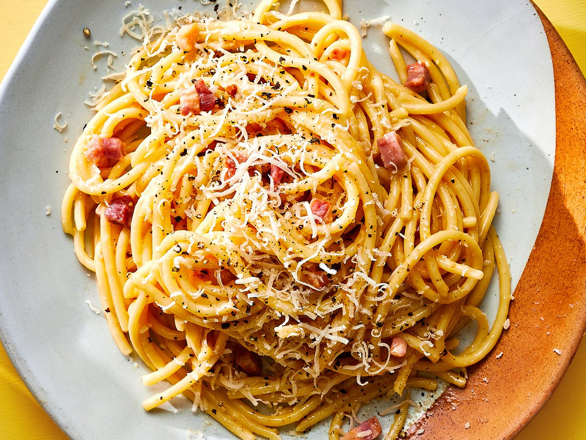

Spaghetti Carbonara

Description
When you're craving a comforting bowl of creamy pasta, nothing will cure you as fast as carbonara.
This pasta dish with Roman origins is a sure win, calling for just for a few ingredients, and done from start to finish in 20 minutes.
It’s basically a pantry dive – spaghetti, bacon, garlic, eggs, and parmesan are all ingredients that are easy to have on hand and don’t spoil fast.
As for the creaminess, it’s a misnomer that carbonara is made with cream – the creaminess comes from the silky parmesan-egg sauce, and it takes a touch of technique to get it right.
Ingredients
- Salt to taste
- 3 Large eggs
- 1 cup Freshly grated Parmesan, plus more for serving
- 8 Slices of bacon
- 2 Gloves of garlic, minced
- Freshly ground black pepper
- Extra-virgin olive oil (optional), for serving
- Flaky sea salt (optional), for garnish
- Freshly chopped parsley, for garnish
Steps
- In a large pot of boiling salted water, cook pasta until al dente according to package directions. Reserve 1 cup pasta water before draining.
- In a medium bowl, whisk eggs and Parmesan until combined.
- Meanwhile, in a large skillet over medium heat, cook bacon until crispy, about 8 minutes. Reserve fat in skillet and transfer slices to a paper towel–lined plate to drain. Break into bite-size pieces.
- Add garlic to skillet and cook until fragrant, about 1 minute. Add cooked pasta and toss until fully coated in bacon fat. Remove from heat. Pour over egg-and-cheese mixture and stir vigorously until creamy (being careful not to scramble eggs). Add pasta water a few tablespoons at a time to loosen sauce.
- Season generously with salt and pepper and stir in cooked bacon.
- Drizzle with oil and garnish with flaky sea salt (if using), Parmesan, and parsley before serving.